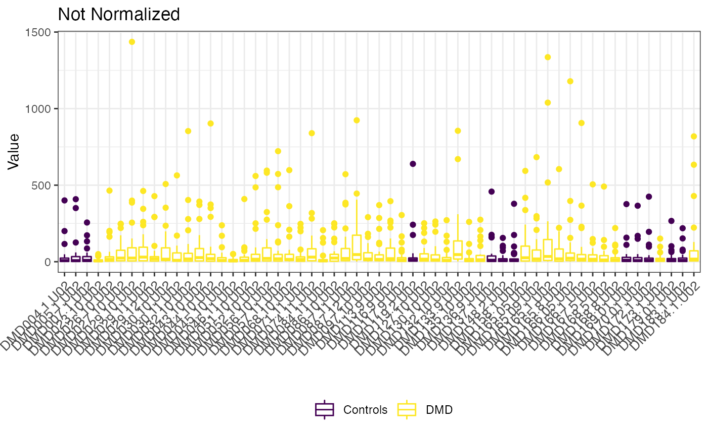

POMA Normalization Methods
Pol Castellano-Escuder
University of Barcelona, Spain.polcaes@gmail.com
2020-06-18
Source:vignettes/POMA-normalization.Rmd
POMA-normalization.RmdLoad Data and Imputation
Let’s create a cleaned MSnSet object from example st000336 data to explore normalization effects.
# load example data data("st000336") # imputation using the default method KNN example_data <- st000336 %>% PomaImpute() ## Warning in PomaImpute(.): method argument is empty! KNN will be used example_data ## MSnSet (storageMode: lockedEnvironment) ## assayData: 30 features, 57 samples ## element names: exprs ## protocolData: none ## phenoData ## sampleNames: DMD004.1.U02 DMD005.1.U02 ... DMD173.1.U02 (57 total) ## varLabels: Group steroids ## varMetadata: labelDescription ## featureData: none ## experimentData: use 'experimentData(object)' ## Annotation: ## - - - Processing information - - - ## Imputed (knn): Thu Jun 18 12:30:38 2020 ## MSnbase version: 2.14.2
Normalization
Here we will evaluate ALL normalization methods that POMA offers on the same MSnSet object to compare them.
none <- PomaNorm(example_data, method = "none", round = 3) auto_scaling <- PomaNorm(example_data, method = "auto_scaling", round = 3) level_scaling <- PomaNorm(example_data, method = "level_scaling", round = 3) log_scaling <- PomaNorm(example_data, method = "log_scaling", round = 3) log_transformation <- PomaNorm(example_data, method = "log_transformation", round = 3) vast_scaling <- PomaNorm(example_data, method = "vast_scaling", round = 3) log_pareto <- PomaNorm(example_data, method = "log_pareto", round = 3)
Normalization effect on data dimensions
When we check for the dimension of the data after normalization we can see that ALL methods have the same effect on data dimension. PomaNorm only change the data dimension when the data has features that only have zeros and when the data has features with 0 variance. Only in these two cases PomaNorm will remove features of the data, changing the data dimensions.
dim(Biobase::exprs(none)) ## [1] 30 57 dim(Biobase::exprs(auto_scaling)) ## [1] 30 57 dim(Biobase::exprs(level_scaling)) ## [1] 30 57 dim(Biobase::exprs(log_scaling)) ## [1] 30 57 dim(Biobase::exprs(log_transformation)) ## [1] 30 57 dim(Biobase::exprs(vast_scaling)) ## [1] 30 57 dim(Biobase::exprs(log_pareto)) ## [1] 30 57
Normalization effect on samples
p1 <- PomaBoxplots(none, group = "samples", jitter = FALSE) + ggtitle("Not Normalized") + ylab("") + theme(axis.text.x = element_blank()) p2 <- PomaBoxplots(auto_scaling, group = "samples", jitter = FALSE) + ggtitle("Auto Scaling") + ylab("") + theme(legend.position = "none", axis.text.x = element_blank()) p3 <- PomaBoxplots(level_scaling, group = "samples", jitter = FALSE) + ggtitle("Level Scaling") + ylab("") + theme(legend.position = "none", axis.text.x = element_blank()) p4 <- PomaBoxplots(log_scaling, group = "samples", jitter = FALSE) + ggtitle("Log Scaling") + ylab("") + theme(legend.position = "none", axis.text.x = element_blank()) p5 <- PomaBoxplots(log_transformation, group = "samples", jitter = FALSE) + ggtitle("Log Transformation") + ylab("") + theme(legend.position = "none", axis.text.x = element_blank()) p6 <- PomaBoxplots(vast_scaling, group = "samples", jitter = FALSE) + ggtitle("Vast Scaling") + ylab("") + theme(legend.position = "none", axis.text.x = element_blank()) p7 <- PomaBoxplots(log_pareto, group = "samples", jitter = FALSE) + ggtitle("Log Pareto") + ylab("") + theme(legend.position = "none", axis.text.x = element_blank()) p1 / (p2 + p3 + p4) / (p5 + p6 + p7)

Normalization effect on features
p8 <- PomaDensity(none, group = "features") + ggtitle("Not Normalized") + ylab("") + theme(axis.text.x = element_blank()) p9 <- PomaDensity(auto_scaling, group = "features") + ggtitle("Auto Scaling") + ylab("") + theme(legend.position = "none", axis.text.x = element_blank()) p10 <- PomaDensity(level_scaling, group = "features") + ggtitle("Level Scaling") + ylab("") + theme(legend.position = "none", axis.text.x = element_blank()) p11 <- PomaDensity(log_scaling, group = "features") + ggtitle("Log Scaling") + ylab("") + theme(legend.position = "none", axis.text.x = element_blank()) p12 <- PomaDensity(log_transformation, group = "features") + ggtitle("Log Transformation") + ylab("") + theme(legend.position = "none", axis.text.x = element_blank()) p13 <- PomaDensity(vast_scaling, group = "features") + ggtitle("Vast Scaling") + ylab("") + theme(legend.position = "none", axis.text.x = element_blank()) p14 <- PomaDensity(log_pareto, group = "features") + ggtitle("Log Pareto") + ylab("") + theme(legend.position = "none", axis.text.x = element_blank()) p8 / (p9 + p10 + p11) / (p12 + p13 + p14)

Session Information
sessionInfo() ## R version 4.0.1 (2020-06-06) ## Platform: x86_64-apple-darwin17.0 (64-bit) ## Running under: macOS Catalina 10.15.5 ## ## Matrix products: default ## BLAS: /Library/Frameworks/R.framework/Versions/4.0/Resources/lib/libRblas.dylib ## LAPACK: /Library/Frameworks/R.framework/Versions/4.0/Resources/lib/libRlapack.dylib ## ## locale: ## [1] en_US.UTF-8/en_US.UTF-8/en_US.UTF-8/C/en_US.UTF-8/en_US.UTF-8 ## ## attached base packages: ## [1] parallel stats graphics grDevices utils datasets methods ## [8] base ## ## other attached packages: ## [1] forcats_0.5.0 stringr_1.4.0 dplyr_1.0.0 ## [4] purrr_0.3.4 readr_1.3.1 tidyr_1.1.0 ## [7] tibble_3.0.1 tidyverse_1.3.0 patchwork_1.0.0 ## [10] ggplot2_3.3.1 Biobase_2.48.0 BiocGenerics_0.34.0 ## [13] POMA_0.99.0 BiocStyle_2.16.0 ## ## loaded via a namespace (and not attached): ## [1] readxl_1.3.1 backports_1.1.8 circlize_0.4.10 ## [4] plyr_1.8.6 igraph_1.2.5 lazyeval_0.2.2 ## [7] splines_4.0.1 gmp_0.6-0 BiocParallel_1.22.0 ## [10] digest_0.6.25 foreach_1.5.0 htmltools_0.5.0 ## [13] viridis_0.5.1 fansi_0.4.1 magrittr_1.5 ## [16] memoise_1.1.0 cluster_2.1.0 doParallel_1.0.15 ## [19] limma_3.44.3 recipes_0.1.12 ComplexHeatmap_2.4.2 ## [22] graphlayouts_0.7.0 modelr_0.1.8 gower_0.2.1 ## [25] matrixStats_0.56.0 rARPACK_0.11-0 pkgdown_1.5.1.9000 ## [28] colorspace_1.4-1 rvest_0.3.5 blob_1.2.1 ## [31] ggrepel_0.8.2 haven_2.3.1 xfun_0.14 ## [34] crayon_1.3.4 jsonlite_1.6.1 impute_1.62.0 ## [37] survival_3.1-12 iterators_1.0.12 glue_1.4.1 ## [40] polyclip_1.10-0 gtable_0.3.0 ipred_0.9-9 ## [43] zlibbioc_1.34.0 GetoptLong_1.0.0 RankProd_3.14.0 ## [46] shape_1.4.4 Rmpfr_0.8-1 scales_1.1.1 ## [49] vsn_3.56.0 DBI_1.1.0 Rcpp_1.0.4.6 ## [52] mzR_2.22.0 viridisLite_0.3.0 clue_0.3-57 ## [55] preprocessCore_1.50.0 clisymbols_1.2.0 stats4_4.0.1 ## [58] lava_1.6.7 prodlim_2019.11.13 glmnet_4.0-2 ## [61] htmlwidgets_1.5.1 httr_1.4.1 RColorBrewer_1.1-2 ## [64] ellipsis_0.3.1 pkgconfig_2.0.3 XML_3.99-0.3 ## [67] farver_2.0.3 dbplyr_1.4.4 nnet_7.3-14 ## [70] caret_6.0-86 labeling_0.3 tidyselect_1.1.0 ## [73] rlang_0.4.6 reshape2_1.4.4 ggcorrplot_0.1.3 ## [76] cellranger_1.1.0 munsell_0.5.0 tools_4.0.1 ## [79] cli_2.0.2 generics_0.0.2 broom_0.5.6 ## [82] evaluate_0.14 mzID_1.26.0 yaml_2.2.1 ## [85] ModelMetrics_1.2.2.2 knitr_1.28 fs_1.4.1 ## [88] tidygraph_1.2.0 randomForest_4.6-14 ggraph_2.0.3 ## [91] ncdf4_1.17 glasso_1.11 nlme_3.1-148 ## [94] xml2_1.3.2 rstudioapi_0.11 compiler_4.0.1 ## [97] plotly_4.9.2.1 png_0.1-7 affyio_1.58.0 ## [100] reprex_0.3.0 tweenr_1.0.1 stringi_1.4.6 ## [103] desc_1.2.0 RSpectra_0.16-0 MSnbase_2.14.2 ## [106] lattice_0.20-41 ProtGenerics_1.20.0 Matrix_1.2-18 ## [109] permute_0.9-5 vegan_2.5-6 vctrs_0.3.1 ## [112] pillar_1.4.4 lifecycle_0.2.0 BiocManager_1.30.10 ## [115] MALDIquant_1.19.3 GlobalOptions_0.1.2 data.table_1.12.8 ## [118] corpcor_1.6.9 R6_2.4.1 pcaMethods_1.80.0 ## [121] affy_1.66.0 bookdown_0.19 gridExtra_2.3 ## [124] IRanges_2.22.2 codetools_0.2-16 MASS_7.3-51.6 ## [127] assertthat_0.2.1 rprojroot_1.3-2 rjson_0.2.20 ## [130] withr_2.2.0 S4Vectors_0.26.1 hms_0.5.3 ## [133] mgcv_1.8-31 mixOmics_6.12.1 grid_4.0.1 ## [136] rpart_4.1-15 timeDate_3043.102 class_7.3-17 ## [139] rmarkdown_2.2.6 ggforce_0.3.1 pROC_1.16.2 ## [142] lubridate_1.7.9 ellipse_0.4.2